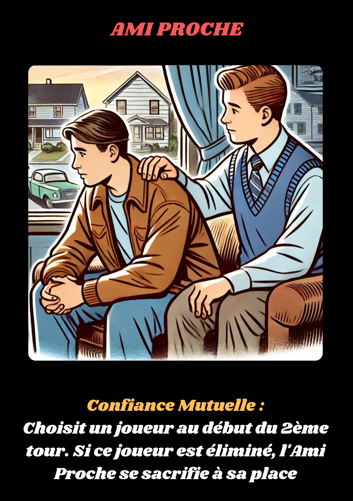

L'Ami Proche d'Emmanuel est terriblement affecté par sa disparition. Le sentiment d'impuissance face à l'absence de son ami le pousse à agir. Il jure de protéger les autres et de découvrir ce qui est arrivé à Emmanuel. Son pouvoir lui permet de se sacrifier à la place d’un autre joueur au deuxième tour, un acte ultime de loyauté envers ceux qui lui sont chers.
